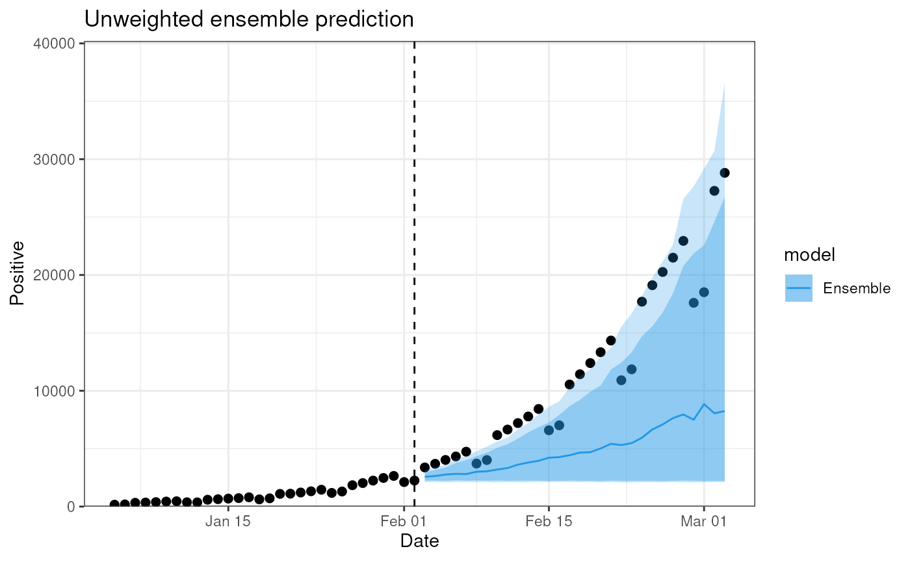

Standard generics for DiseasyEnsemble objects
Source: R/DiseasyEnsemble.R
DiseasyEnsemble-generics.RdStandard generics for DiseasyEnsemble objects
Usage
# S3 method for class 'DiseasyEnsemble'
print(x, n = 5, width = 200, ...)
# S3 method for class 'DiseasyEnsemble'
summary(object, ...)
# S3 method for class 'DiseasyEnsemble'
predict(
object,
observable,
prediction_length,
stratification = NULL,
context_length = 30,
by_model = FALSE,
...
)
# S3 method for class 'DiseasyEnsemble'
plot(
x,
observable,
prediction_length,
stratification = NULL,
context_length = 30,
by_model = FALSE,
...
)Arguments
- x, object
(
DiseasyEnsemble)
Ensemble object to print, summarise or plot.- n
(
integer(1))
The number of models to produce output for.- width
(
integer(1))
The maximum number of characters to print.- ...
(
Any)
Unused. Required to match the generic signature.- observable
(
character)
The observable to provide data or prediction for.- prediction_length
(
numeric)
The number of days to predict. The prediction start is defined bylast_queryable_dateof the?DiseasyObservablesR6 class.- stratification
(
list(quosures) orNULL)
Userlang::quos(...)to specify stratification. If given, expressions in stratification evaluated to give the stratification level.- context_length
(
integer(1))
Number of days prior to prediction to plot observable for.- by_model
(
logical(1))
Should the plot be stratified by model?
Value
NULL (called for side effects)
data.frame-like object with columns with the predictions for the observable from the ensemble by
date, stratification and model (optional).
Examples
observables <- DiseasyObservables$new(
diseasystore = DiseasystoreSeirExample,
conn = DBI::dbConnect(duckdb::duckdb())
)
# Set the reference date in the observables module
observables$set_last_queryable_date(
observables$ds$min_start_date + 30
)
# Create a DiseasyEnsemble object
ensemble <- combineasy(
model_templates = list(DiseasyModelG0, DiseasyModelG1),
modules = tidyr::expand_grid(
observables = list(observables)
)
)
print(ensemble)
#> DiseasyEnsemble: DiseasyModelG0 (hash: 81609), DiseasyModelG1 (hash: db505)
summary(ensemble)
#> DiseasyEnsemble consisting of:
#> DiseasyModelG0: 1
#> DiseasyModelG1: 1
plot(ensemble, "n_positive", prediction_length = 30)
#> ■■■■■■■■■■■■■■■■ 50% | ETA: 3s

rm(ensemble, observables)